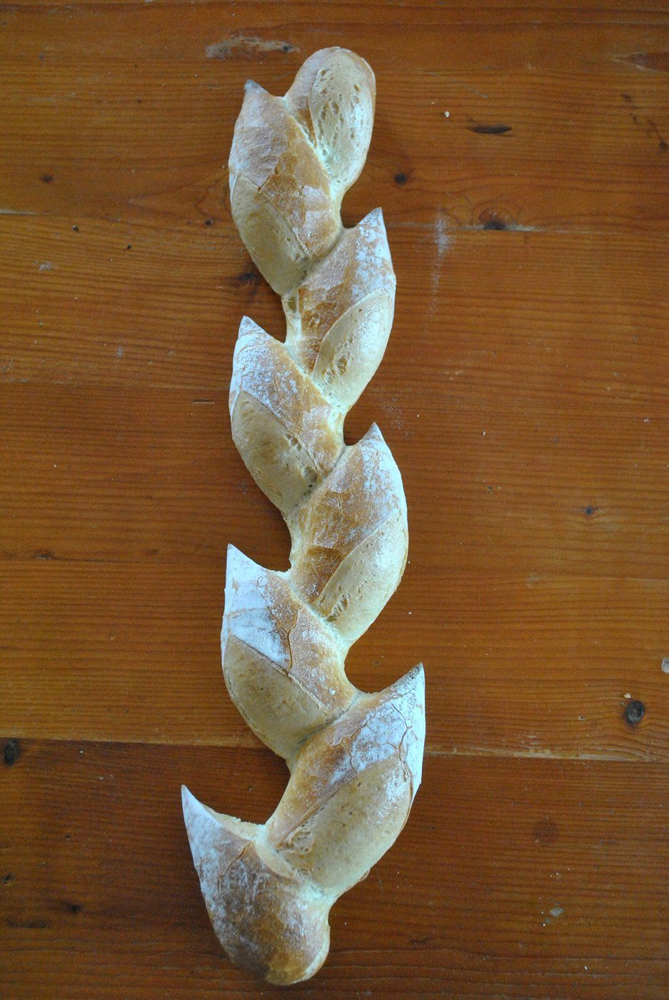
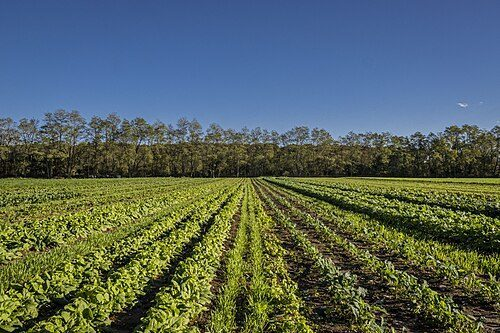
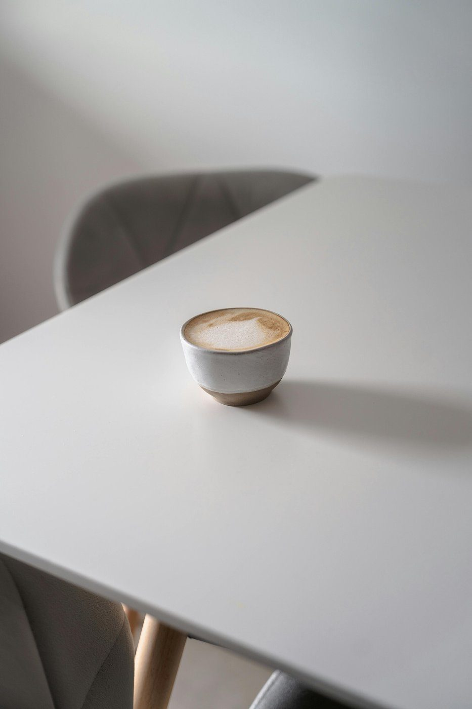

店のこと
モカポットの部位の配置図
お店の詳しい情報は準備中です。ここでは、制作側が考えたデザインの考え方を紹介します。
制作側の連想
番号は、部位の番号
ホームの図にある1〜6の番号は、それぞれモカポットの部位の名前に対応します。モカポット(直火式のコーヒーメーカー)の部位を図にしたもので、制作側の連想です。お店の理念・由来とは無関係で、実際の製品の仕様を示すものでもありません。
1下タンク(ボイラー)
水を入れる、いちばん下の容器。ふちのまわりにねじ山があり、上の部品と組み合わさる。
2安全弁
下タンクの側面に付く小さな金具。中の圧力が上がりすぎたときに逃がすためのもの。
3ファンネル
下タンクにはめ込む、じょうごの形をした部品。ここにコーヒーの粉を入れる。
4フィルタープレート
粉の上にのせる、細かな穴のあいた丸い金属の板。
5ガスケット
上ポットの内側に付く、すき間をふさぐゴムの輪。
6上ポット(サーバー)
できあがったコーヒーがたまる、上側の容器。注ぎ口・取っ手・ふたが付く。
写真(イメージ)
写真(イメージ)





写真はイメージです。お店のものではありません。